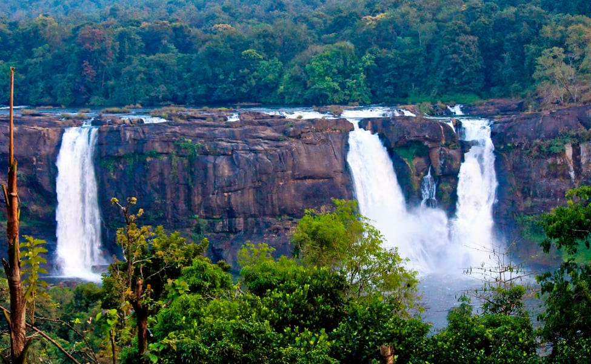
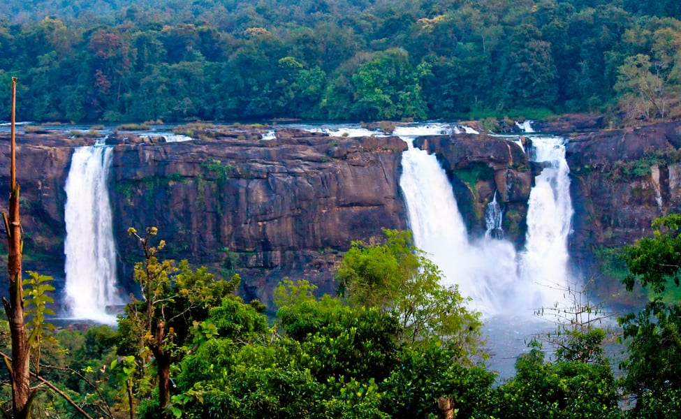

THRISSUR
Thrissur formerly Trichur, also known by its historical name Thrissivaperur,
is a city and the headquarters of the Thrissur district in Kerala, India. It is the third largest urban
agglomeration in Kerala after Kochi and Kozhikode, and the 21st largest in India.The city is built around
a 65-acre (26 ha) hillock called the Thekkinkaadu Maidaanam which seats a large Hindu Shiva Temple. It is
located central of the state, and 304 kilometres (189 mi) north-west of the state's capital city,
Thiruvananthapuram. Thrissur was once the capital of the Kingdom of Cochin, and was a point of contact for the
Assyrians, Greeks, Persians, Arabs, Romans, Portuguese, Dutch and English.
Thrissur is also known as the Cultural Capital of Kerala because of its cultural, spiritual and religious
leanings throughout history.The city centre contains the Kerala Sangeetha Nadaka Academy, Kerala Lalithakala
Akademi and Kerala Sahitya Academy.The city hosts the Thrissur Pooram festival, the most colourful and
spectacular temple festival in Kerala.The festival is held at the Thekkinkadu Maidan in April or May, in
the Malayalam month 'medam'.
Religion is important and varied in Thrissur. The city has historically been a centre of Hindu scholarship, and
Christianity, Islam and Judaism are believed to have entered the Indian subcontinent through Thrissur and its
surrounding areas. Thrissur has a large number of well-known temples including the Vadakkumnathan temple,
Thiruvambadi Sri Krishna Temple, and Paramekkavu temple. There are three major Catholic churches, the St.
Antony's Syro-Malabar Catholic Forane, Our Lady of Lourdes Syro-Malabar Catholic Metropolitan Cathedral and Our
Lady of Dolours Syro-Malabar Catholic Basilica, the largest Christian church in India.India's first mosque,
Cheraman Juma Masjid, is believed to have been constructed in 629 CE.
The city is the headquarters of four major scheduled banks, South Indian Bank Ltd, Catholic Syrian Bank,
Dhanalakshmi Bank and ESAF Small Finance Bank[13] as well as several chit funds.[14] The city is also a big
centre for silks and gold jewellery. Thrissur attracts the largest number of domestic tourists in Kerala.
Apart from being the cultural nerve centre of Kerala, it is also a major academic hub and is home to several
educational institutions including the Kerala Kalamandalam, Kerala Agricultural University, Kerala University of
Health Sciences, College of Veterinary and Animal Sciences, Sree Kerala Varma College, St Thomas College,
Jawahar Bal Bhavan Thrissur, Kerala Institute of Local Administration, Kerala Forest Research Institute, Kerala
Police Academy, Police Dog Training Centre, Kerala Fire and Rescue Services Academy, Excise Academy and Research
Centre, Government College Of Music And Performing Arts, Government College of Fine Arts, Government Law
College, Government Engineering College, Government Medical College and Vaidyaratnam Ayurveda
College.
GALLERY


 
BACK TO HOME

BACK TO HOME